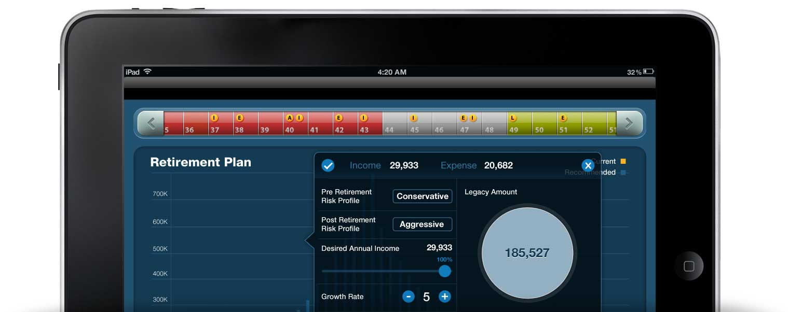
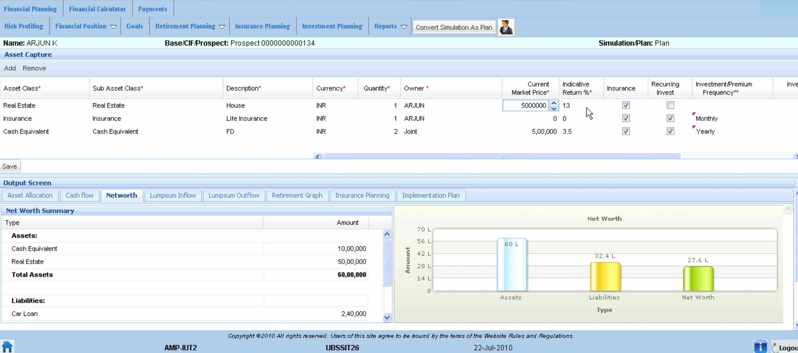

Intellect Financial Planner
Finance app for iPad

About
Financial apps are tools used by financial managers to understand and plan for the insurance and risk management of their clients based on existing financial assets, liabilities and goals. They have lots of forms and can easily give you a headache.
The Challenge
Polaris FT had an existing web app. It wanted to have a companion iPad app. However, the challenge at hand was to make the process of input playful and emotive, so that not only financial managers but also individual families could use the interface.

The existing web app
Conceptualization
After understanding the pain points of the existing app, I had a clear idea of the design considerations.
- 1. Process of input - playful and emotive
- 2. Visualize valuable output with minimum input
- 3. Sequential and consistent workflow
After hours of brainstorming and whiteboarding with my team, I came up with four different concepts - Modular, Board game, Drag/Drop; and Dream Island. These concepts explored various metaphoric design ideas and gestures for I/O including touch, click, Drag & Drop, Pinch and Spread.
The Modular
This is straightforward. User inputs data into the vertical accordion styled forms on the right and gets feedback to the left.
Board game
User inputs data onto a time-board by dragging properties in. A feedback dialog box with pre-populated values appear after each task.
Drag/Drop
Real-time feedback as the user drags and drops coins into the output itself. The coins have preset values and a suitable affordance.
Dream Island
This concept proposes gamification of input where users place castles on an island and build an imaginary territory.
Mockups
Shots from the initial mockup
Visual Design
User Studies
We conducted cognitive walkthroughs with the mocks. We found out that users could easily relate it with a board game like monopoly. The users could complete their tasks much faster than with the web counterpart. However, the timeline around the UI was a major drawback.
Final Design
In the final design, we changed the timeline to the top of the viewport. I completed the visual design, cut the assets and sent it off to production.
The app was launched last year and is now available on the App store.